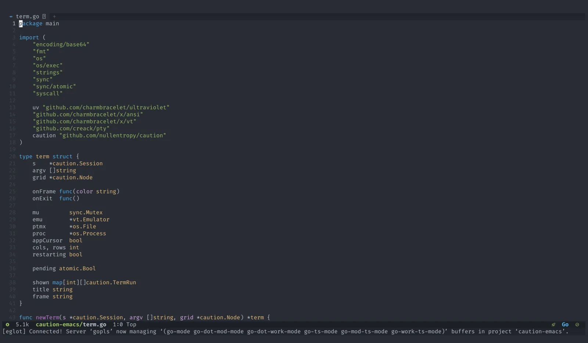
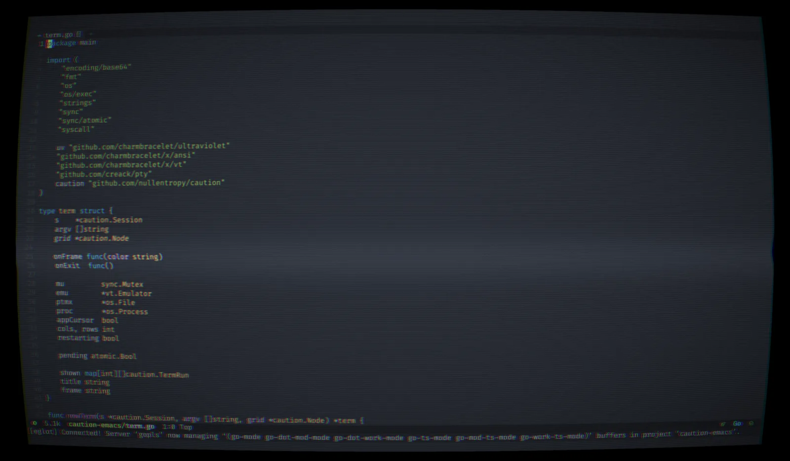

Caution Emacs runs terminal Emacs, including Doom, in its own macOS window.

Install
curl -fsSL https://raw.githubusercontent.com/nullentropy/caution-emacs/main/install.sh | shThis installs Caution Emacs.app in /Applications. Releases are also on the releases page.
The app checks for a new release when it opens and every hour after. It downloads the update and installs it the next time the app opens. Restart to Update in the app menu does it now: Emacs asks to save your buffers, then the app reopens on the new version. Check for Updates… checks right away.
Requirements
macOS 13 or newer, and Emacs with emacsclient on your PATH. Homebrew's emacs works; it does not need GUI support. Doom's icons need Fira Code Nerd Font Mono in ~/Library/Fonts.
Menus
Each menu item runs an Emacs command in the window's Emacs, using Doom's version of the command when Doom installed.
| Cmd+, | Open Doom config |
| Cmd+O | Open file |
| Cmd+P | Open file in project |
| Cmd+S | Save |
| Cmd+W | Close buffer |
| Cmd+B | Switch buffer |
| Cmd+F | Search the buffer |
| Cmd+Shift+X | Run a command (M-x) |
| Cmd+G | Magit status |
| Cmd+C / V | Copy / paste with the macOS clipboard |
| Cmd+= / - / 0 | Bigger / smaller / default text size |
| Cmd+Shift+R | Restart Emacs |
The README lists every item. Other keys go to Emacs. Option is Meta.
Shaders
